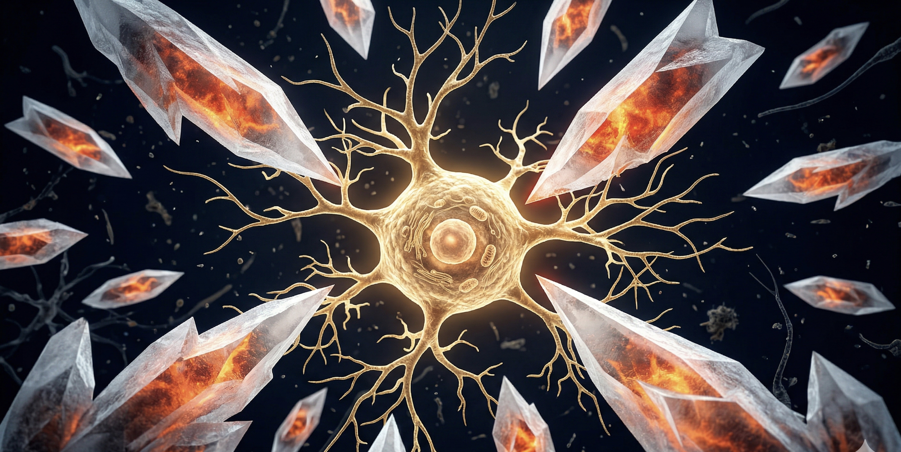
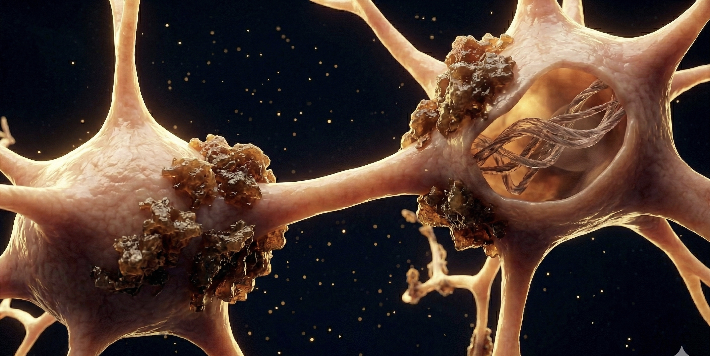
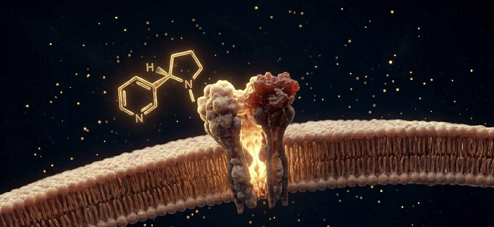

How sugar destroys the brain, why nicotine research still matters, and what the McCourt Foundation is positioned to do about it.
Research Brief 2026A disease that erases identity, bankrupts families, and overwhelms healthcare systems worldwide.
Alzheimer's is the 7th leading cause of death worldwide and 6th in the United States, with deaths rising 142% since 2000. A 2025 study in Nature Medicine estimates a 42% lifetime risk of developing dementia after age 55. For women at age 45, the risk is 1 in 5.
In 2024, 12 million U.S. caregivers provided 19.2 billion hours of unpaid care — valued at $413 billion. Globally, 75% of dementia cases remain undiagnosed.
The evidence linking dietary sugar consumption to neurodegeneration is no longer speculative. It is overwhelming, dose-dependent, and consistent across populations.

Participants in the highest quartile of sugar intake had a 43% higher dementia risk compared to the lowest quartile (HR 1.43, 95% CI: 1.20–1.70). Over a 9.94-year mean follow-up, genetic susceptibility via APOE4 amplified the effect. The relationship held after adjusting for BMI, diabetes, cardiovascular risk, and overall diet quality.
Participants in the highest quintile of added sugar intake had double the risk of developing dementia (HR 2.10). Fructose emerged as the most neurotoxic sugar form, with a 2.8× risk increase (HR 2.80, 95% CI: 1.38–5.67, p=0.0009). Refined grain consumption tripled AD risk in the top quintile.
The largest single analysis found no safe consumption threshold for sugar and dementia risk. The relationship was non-linear and dose-responsive: HR 1.003 per gram per day (p<0.001). Each additional daily gram of sugar measurably increased risk across the entire intake spectrum.
Pooled analysis across 9 independent cohorts: sugar-sweetened beverage consumption associated with RR 1.49 (95% CI: 1.03–2.15) for dementia. Artificially sweetened beverages showed a similarly elevated relative risk of RR 1.42, suggesting the mechanism may extend beyond caloric intake alone.
A growing body of evidence reframes Alzheimer's not as a disease of aging, but as a brain-specific form of insulin resistance — a metabolic failure confined to the central nervous system, often developing without peripheral diabetes.

Brain insulin resistance develops up to a decade before clinical symptoms appear — creating a critical window for early intervention through dietary modification and metabolic screening.
Isolated from tobacco and studied for over 30 years as a cognitive enhancer, nicotine stimulates alpha-4-beta-2 and alpha-7 nicotinic acetylcholine receptors in the brain. Unlike cholinesterase inhibitors — which merely slow the breakdown of existing acetylcholine — nicotine directly activates and upregulates these receptors.
A critical distinction: nicotine does not cause cancer. The carcinogens in tobacco — tar, nitrosamines, polycyclic aromatic hydrocarbons — are responsible. This separation is foundational to the research.

Neurology, 2012 · Class I Evidence
74 nonsmokers with mild cognitive impairment received 15 mg/day transdermal nicotine patches or placebo for 6 months.
Significant improvement in attention (p=0.0003) and word recall (p=0.018). No dependency observed. No significant adverse effects. First Class I evidence for nicotine as a cognitive enhancer in non-smokers with MCI.
Vanderbilt / NIH / ADDF · 2016–2025 · NCT02720445
309 adults ages 55–90 with mild cognitive impairment. Up to 21 mg/day transdermal nicotine for 2 years across 35+ clinical sites. The largest and longest trial of nicotine for cognitive decline ever conducted.
Result: Did not significantly slow memory loss versus placebo. However, the trial generated critical new data on nicotine–brain interactions, biomarker responses, and dose–receptor dynamics that will inform the next generation of cholinergic therapies.
Even trials that fail to generate positive results produce vitally important information that advances our understanding of these diseases.— MIND Study Team, Vanderbilt University Medical Center, 2025
The 2024 Lancet Commission identified 14 modifiable risk factors that account for 45% of all dementia cases globally — up from 40% and 12 factors in 2020. This is a disease that can be significantly prevented.
Two of the most impactful factors — physical inactivity and diabetes — are directly linked to sugar metabolism and the mechanisms described in this brief.
* New factors added in 2024 Lancet Commission update
The most recent longitudinal studies confirm that physical activity is among the most powerful modifiable interventions against cognitive decline — and the evidence is strengthening with every publication cycle.
Highest levels of midlife physical activity associated with 41% lower dementia risk. Late-life activity showed even greater protection at 45% risk reduction.
Exercise directly slows tau protein accumulation in the brain — one of the two hallmark pathologies of Alzheimer's — even at moderate activity levels.
Even physical activity levels below the recommended 150 minutes per week guideline provide meaningful cognitive protection. There is no minimum threshold for benefit.
The McCourt Foundation already operates one of the most powerful platforms for physical activity in America — the Los Angeles Marathon and its suite of endurance events.
Every runner crossing a finish line builds the cognitive reserve the Lancet Commission identifies as critical for preventing dementia. The Foundation's events are already doing this work. The science has caught up.
For over 30 years, The McCourt Foundation has been dedicated to curing neurological diseases — galvanized by the McCourt family's own experiences with multiple sclerosis and Alzheimer's disease.
Founded in 1992, TMF has donated millions to neurological research, raised over $63 million through its Nonprofit Partner Program, maintained research partnerships with Massachusetts General Hospital and Brigham and Women's Hospital, and hosts its annual Neurological Symposium. The Foundation operates the LA Marathon, Rose Bowl Half Marathon, and other endurance events.
Position the Los Angeles Marathon as a dementia-prevention event — the first major marathon to explicitly brand physical activity as neuroprotective. Launch a "Run for Your Brain" campaign across the Foundation's event portfolio. Use the annual Neurological Symposium as a platform for public education on the sugar–Alzheimer's connection and the science of exercise-based prevention.
Fund follow-up research building on the MIND Study dataset. Support combination therapy trials through existing partnerships with Massachusetts General and Brigham and Women's Hospital. Prioritize insulin resistance–Alzheimer's research — the Type 3 Diabetes pathway — as a foundation-defining research agenda.
Launch a national sugar–Alzheimer's education campaign modeled on the anti-smoking public health campaigns that transformed tobacco use. Advocate for HOMA-IR (insulin resistance) screening as standard practice. Champion blood-based biomarker testing for early Alzheimer's detection — 91% of Americans say they want the option of early diagnosis.
Advocate for increased NIA funding (currently $4.4 billion vs. NCI's $7.2 billion — a gap that does not reflect the scale of the crisis). Leverage the McCourt Institute at Georgetown University and Sciences Po for transatlantic policy leadership. Use Olympique de Marseille's platform for European awareness. Bring the Lancet Commission's prevention strategies to underserved communities domestically and globally.
57 million people. 45% of cases involve modifiable risk factors.
The evidence from 580,000+ participants linking sugar to neurodegeneration is overwhelming.
Exercise reduces risk by up to 45% — and the McCourt Foundation already runs the platform.
The science is clear. The mission is aligned. The time to act is now.
[1] Alzheimer's Association. 2025 Facts & Figures. Alzheimers Dement 2025;21:e70235
[2] WHO. Dementia Fact Sheet, March 2025
[3] Alzheimer's Disease International. Dementia Statistics
[4] An Y et al. J Prev Alzheimers Dis 2025;12(9):100312
[5] Zhang S et al. BMC Medicine 2024;22:298
[6] Agarwal P et al. J Alzheimers Dis 2023;95(4):1417–1425
[7] Jouni N et al. Aging Ment Health 2025;29(10):1845–1855
[8] de la Monte & Wands. J Diabetes Sci Technol 2008;2(6):1101–13
[9] Nguyen et al. Int J Mol Sci 2020;21(9):3165
[10] Zhao N et al. Neuron 2017;96(1):115–129
[11] Newhouse P et al. Neurology 2012;78(2):91–101
[12] MIND Study NCT02720445. mindstudy.org/study-results
[13] Livingston et al. Lancet 2024;404:572–628
[14] Marino et al. JAMA Netw Open 2025;8(11):e2544439
[15] Nature Medicine 2025;31:4075–4083
[16] Fang M et al. Nat Med 2025;31(3):772–776
[17] The McCourt Foundation. mccourtfoundation.org/about-us
The McCourt Foundation · Research Brief 2026